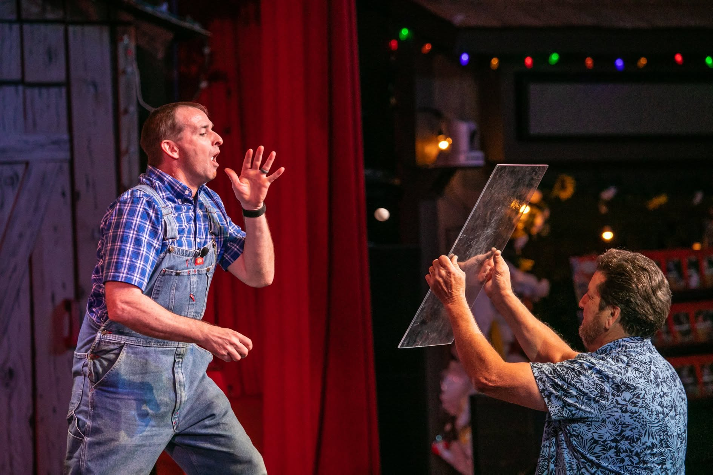
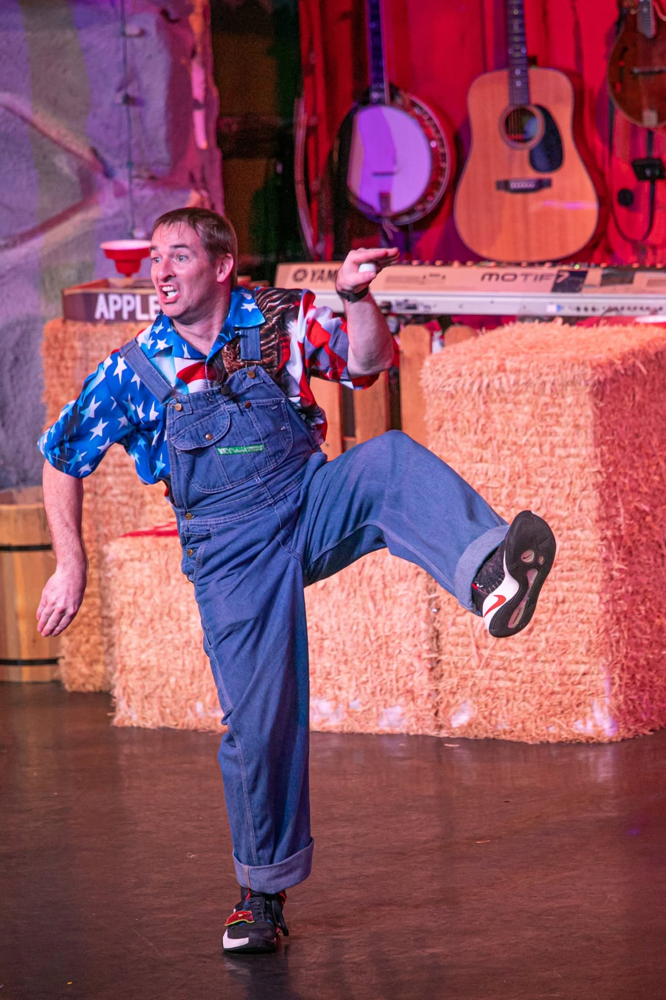
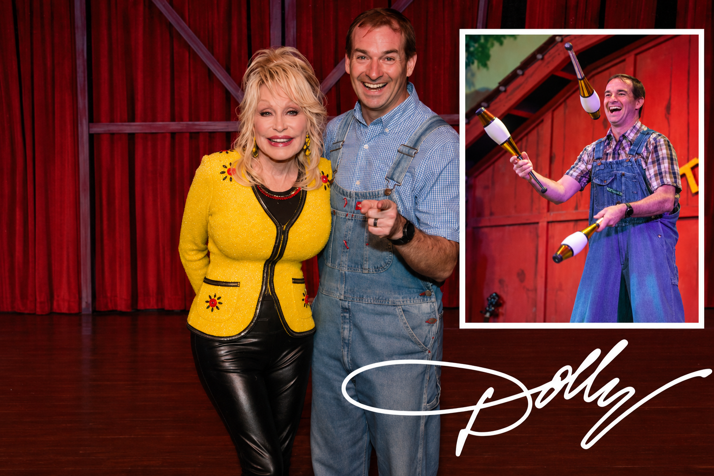
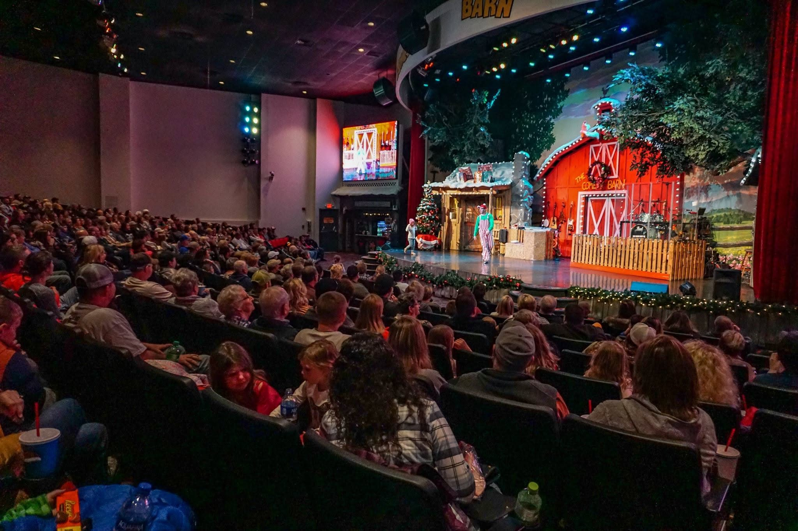
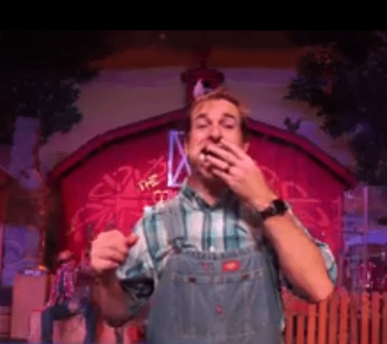
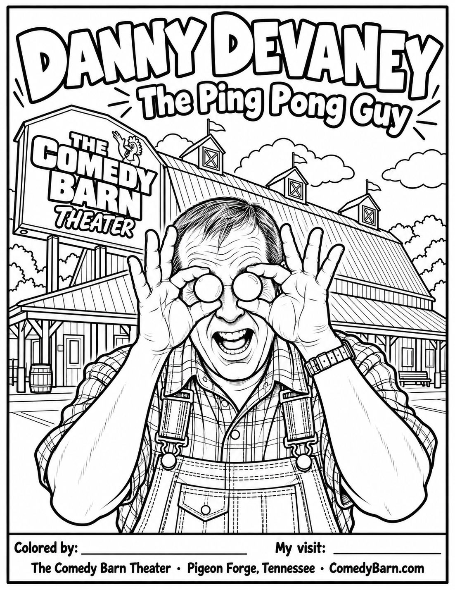

The famous ping-pong act
Everyone knows the ping pong, right? But where it goes next is anybody’s guess. With a force field, Hugman, and non-stop laughter, Danny’s signature routine has a personality all its own.
COMEDIAN. JUGGLER. THE PING PONG BALL GUY.
DANNY DEVANEY
The Ping Pong Ball Guy. The Ringling clown
and the entertainer from The Comedy Barn you never forget.
Clean comedy, outrageous juggling,
and audience participation.
A CAREER ON EXTRAORDINARY STAGES. A PLACE IN CLOWNING HISTORY.
Ping-pong balls. A little danger. A lot of audience participation. Explore the routines behind a lifetime of laughs.

THE PING PONG BALL GUYEveryone knows the ping pong, right? But where it goes next is anybody’s guess. With a force field, Hugman, and non-stop laughter, Danny’s signature routine has a personality all its own.
Watch the show highlights ↗Some performers do tricks. Danny turns them into a room full of people laughing together.
Everyone knows the ping pong, right? But where it goes next is anybody’s guess. With a force field, Hugman, and non-stop laughter, Danny’s signature routine has a personality all its own.
Warm, playful audience interaction and visual comedy that connects across generations. The crowd is part of the magic.
Circus-trained skill meets decades of timing, improvisation and stagecraft. Spontaneous in the moment. Experienced where it counts.
Before the ping-pong balls, there was a kid in New Jersey who wanted to be a clown. That dream became a life on stage — from Ringling Bros. and Barnum & Bailey to the theme parks in Orlando, and now two decades of shows in the heart of the Smoky Mountains.

DANNY BEING DANNY.A graduate of Ringling Bros. and Barnum & Bailey Clown College, Danny toured the United States with the circus for two years — building his foundations in physical comedy, character and showmanship.
From Circus Circus Casino in Tunica to Walt Disney World’s Fantasmic! pre-show and his own stage at EPCOT, Danny made an art of connecting with a crowd. His career also took him aboard Disney Cruise Line and to WonderWorks Orlando, where he helped develop and headlined the Outta Control Dinner Show for five years.
Hoot N Holler. Lumberjack Feud. Then a 15-year run as a Comedy Barn favorite — a familiar face on stage and on billboards around town. Danny continues that run under World Choice Investments, part of Dolly Parton’s entertainment family.
Discover The Comedy Barn ↗A performer’s performer, ready to connect with a whole new audience. Let’s talk about what Danny could bring to your show.
Start a conversation ↗A place in clowning history, and the stories behind a lifetime on stage.

The Comedy Barn Theater joined Dolly Parton’s dinner-show company, World Choice Investments, in 2019. Danny has been proud to continue bringing laughter to its stage under WCI’s management ever since.
Danny is featured in Karl-Heinz Ziethen’s Juggling, The Past and Future, alongside the world’s greatest juggling entertainers throughout history.
Explore the book ↗Danny joins Erik Dobell and Mike Fowler to talk clowning, unusual juggling props, and his journey to Pigeon Forge.
Watch or listen to the interview ↗
“Danny Devaney is absolutely hilarious.”Explore20404222387 · Tripadvisor · June 2026 ↗
“We laughed so hard, we cried.”Tim R · Tripadvisor · August 2026 ↗
“What he does with ping pong balls, a plexiglass sheet and audience members is a sight to behold.”Roadtirement · March 2016 ↗
“Danny Devane was side-splitting”Grant N · Tripadvisor · October 2025 ↗
Saw him in Pigeon Forge? Still talking about the ping-pong balls? Keep the laughs going — and come say hello.

THE SAME DANNY. OFF STAGE.
Photos, show memories and whatever he gets up to next. Follow Danny and share your favorite moment from the show.

FOR THE LITTLE FANS
Bring a favorite show memory home. Print Danny’s free coloring sheet, let the kids reach for their crayons, and give the Ping Pong Ball Guy a colorful new look. Add your child’s name and the date of your visit for a keepsake from The Comedy Barn.
Download the coloring sheet ↓Free printable · Open the image and print using “Fit to page.”
YOUR AUDIENCE. AN UNFORGETTABLE TIME.
Theaters. Casinos. Attractions. Cruise lines. Fairs and festivals.
Tell Danny what you have in mind. Let’s put some laughs on your stage.